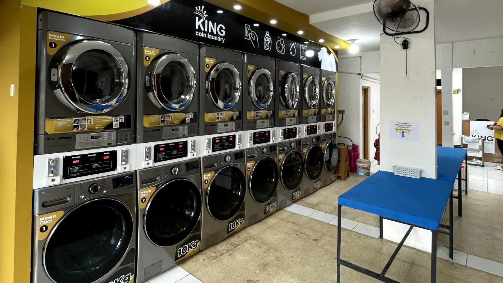

Visi
Menjadi penyedia jasa laundry terpecaya yang mengutamakan kualitas higienis, kecepatan layanan, dan kepuasan pelanggan di setiap helai pakaian.
Solusi perawatan pakaian modern yang bersih, wangi, higienis, dan tepat waktu untuk keseharian Anda

Berdiri sejak tahun 2021 di Kota Pontianak, FreshWash Laundry hadir dari keinginan untuk memberikan layanan cuci pakaian yang hanya sekadar bersih, tetapi juga merawat serat kain agar tetap awet.
Didirikan oleh tim muda yang peduli pada kebersihan dan efisien waktu, kami menggabungkan teknologi mesin cuci komersial berkapasitas besar dengan detergen ramah lingkungan yang aman bagi kulit sensitif.
Menjadi penyedia jasa laundry terpecaya yang mengutamakan kualitas higienis, kecepatan layanan, dan kepuasan pelanggan di setiap helai pakaian.